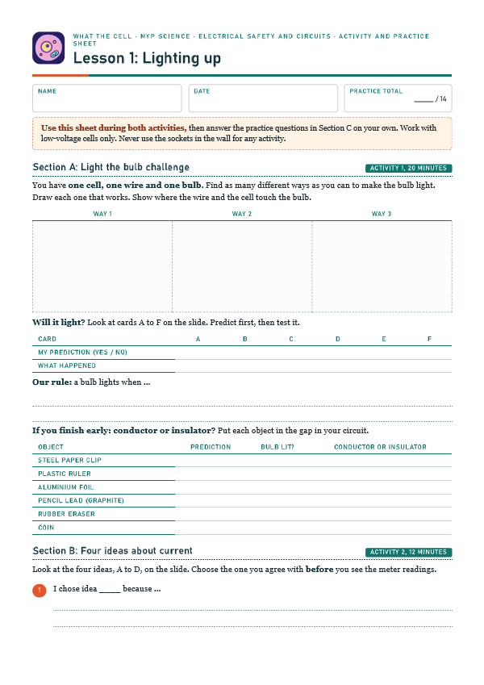

By the end of the lesson you can
- Build a circuit that makes a bulb light, and explain why it works
- Describe a closed and an open circuit, and a short circuit
- Sort materials into conductors and insulators
- Explain why current is not used up in a bulb
Keys: arrows or a presentation clicker move the slides, F for full screen. Slides with a red dot have a video or simulation.
Videos (all 5 minutes or less)
- 3:37
Simple circuits
FuseSchool. What every circuit needs and what a switch does. Slide 9 and 12.
- 2:37
What is a short circuit?
Gadgetronicx. Why a wire across a cell gets hot. Slide 16.
- 3:59
Wires
FuseSchool. Copper cores, insulation and why cables are built the way they are. Slide 18.
- 2:23
Testing conductors and insulators
Next Generation Science. Everyday objects tested in a circuit. Slide 18.
- 4:28
Current
FuseSchool. What current is and why it is the same all round a loop. Slide 21.
Simulations
- Lab
Light the Bulb Lab
What the Cell. Drag wires to light a bulb, test the six cards from class, read two meters to check the four ideas about current, and sort conductors from insulators.
- PhET
Circuit Construction Kit: DC
PhET, University of Colorado Boulder. Build a loop, turn on Show electrons, and try two ammeters.
Print and practise

Activity and practice sheet
Used in the lesson’s activities, with practice questions. Your teacher has the answers.
Download (PDF)Lesson 1 slides
All 27 slides in one file, to read again or print. The video buttons on the slides open YouTube.
Download the slides (PDF)Revising? The Revision tab on the unit page has the unit notes and review.
Notes: Lighting up
A circuit is a complete loop
Charge flows out of one end of the cell, through each part and back into the other end. The charge is already in the wires: the cell pushes it round and gives it energy. A gap anywhere, such as an open switch or a broken filament, stops the current everywhere in the loop.
A bulb has two contacts
One end of the filament joins the metal side of the base and the other joins the tip. A black insulating ring keeps them apart. Charge must go in at one contact and out at the other, so each contact must be joined to a different end of the cell.
Conductors and insulators
Metals conduct because some of their electrons are free to move. Graphite conducts too. In insulators such as plastic, rubber and glass the electrons are held in place. A cable uses a copper core inside plastic insulation.
Current is not used up
The same current flows all the way round a single loop, like the links of a bicycle chain. A bulb does not use up charge: it changes the energy carried by the charges into light and heat.
Short circuits
A short circuit is a path with almost nothing in it to slow the charge, such as a wire straight across a cell. A very large current flows and the wire heats up fast. At 220 V this can melt insulation and start fires.
Why safety matters
A wall socket in Vietnam gives 220 V, about 150 times the push of a 1.5 V cell. If you touch a live wire and the ground at the same time, you become part of the loop. That is why we never use sockets for class activities.
Key words
| circuit | a complete path of conductors that charge can flow round |
|---|---|
| cell | a source that pushes charge and gives it energy; two or more cells make a battery |
| closed / open circuit | an unbroken loop / a loop with a gap |
| conductor | a material that charge can flow through, such as copper |
| insulator | a material that charge cannot flow through, such as plastic |
| current | the flow of charge; the same all round a single loop |
| short circuit | a path with almost nothing to slow the current, so the wire gets hot |